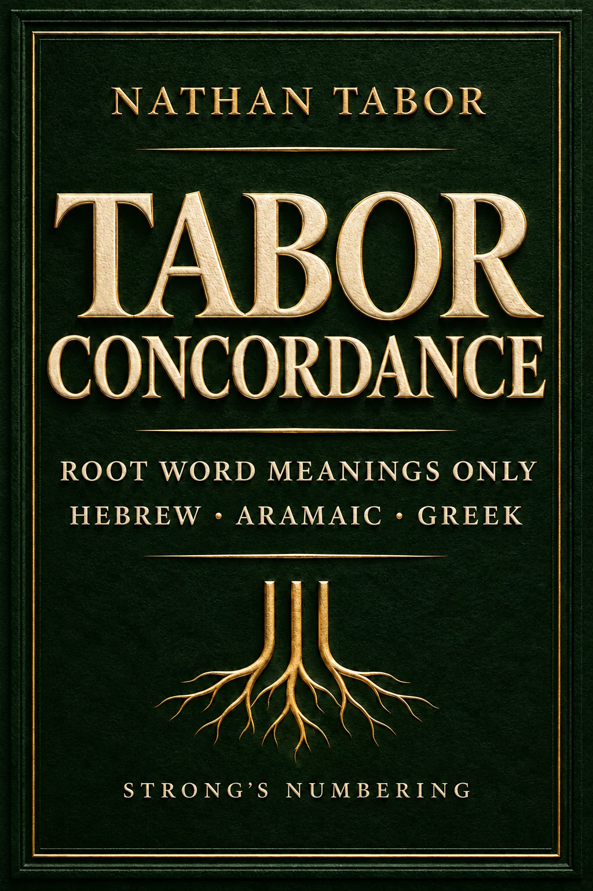

Tabor Concordance
Root word meanings only
Hebrew · Aramaic · Greek · Strong’s numbering

Loading 14,197 entries…
| Strong’s no. | Original word | Root word meaning |
|---|
Sources
Numbered links give the immediate source forms identified by Strong. The original Greek numbering leaves G2717 and G3203–G3302 unassigned. Tentative and unavailable meanings are marked. This digital extraction still requires entry-by-entry review against the print edition.
James Strong’s dictionaries. Hebrew and Aramaic XML edited by David Troidl and David Instone-Brewer. Greek XML prepared by Ulrik Sandborg-Petersen (CC0). Hebrew and Aramaic source · Greek source